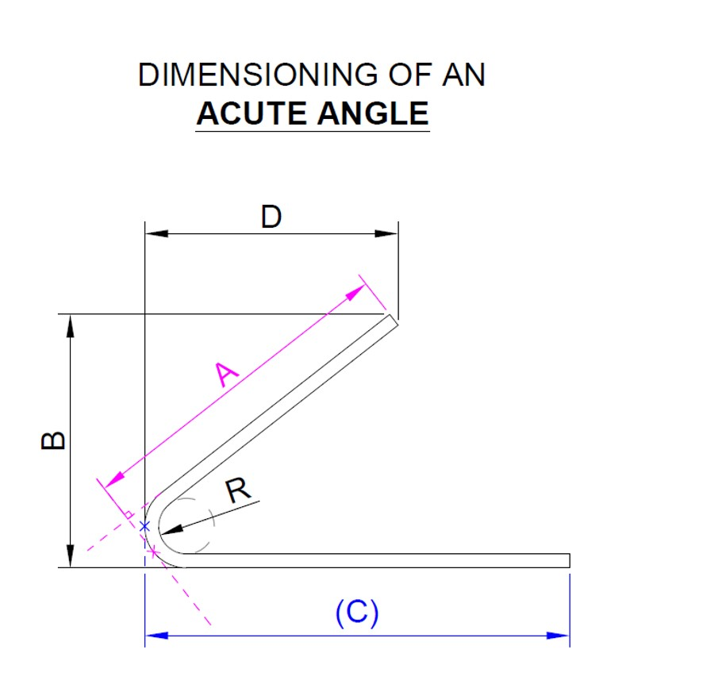
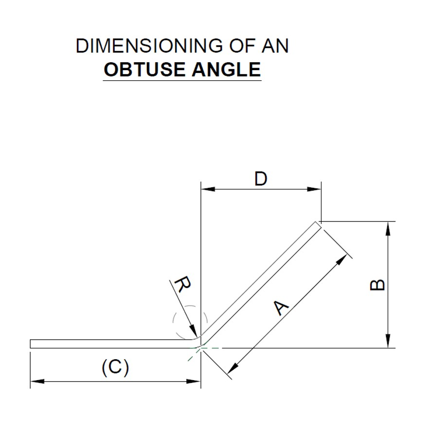

<div cdkDrag cdkDragRootElement=".your-custom-dialog-class">
    <div class="modal-header" cdkDragHandle>
        <span class="modal-title">Dimensioning Rule (度量规则)</span>
        <i class="fa-solid fa-xmark"></i>
        <button type="button" class="btn-close" aria-label="Close" (click)="Cancel()"></button>
    </div>

    <div class="modal-body">
        <div>
            <table>
                <tr>
                    <td width=50%></td>
                    <td width=50%></td>
                </tr>
            </table>
        </div>
    </div>
</div>